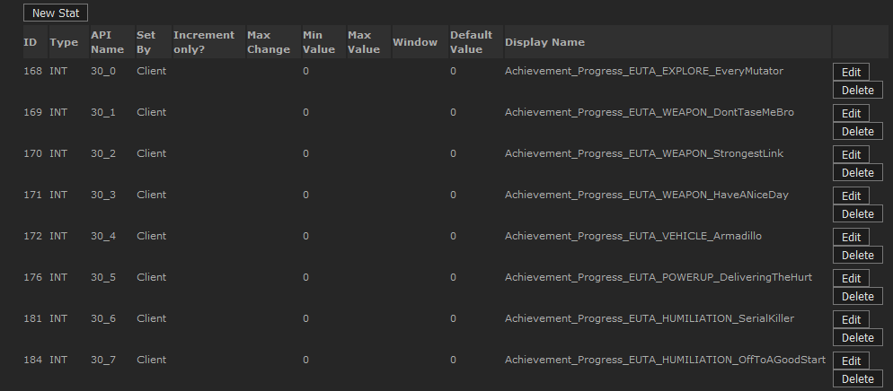
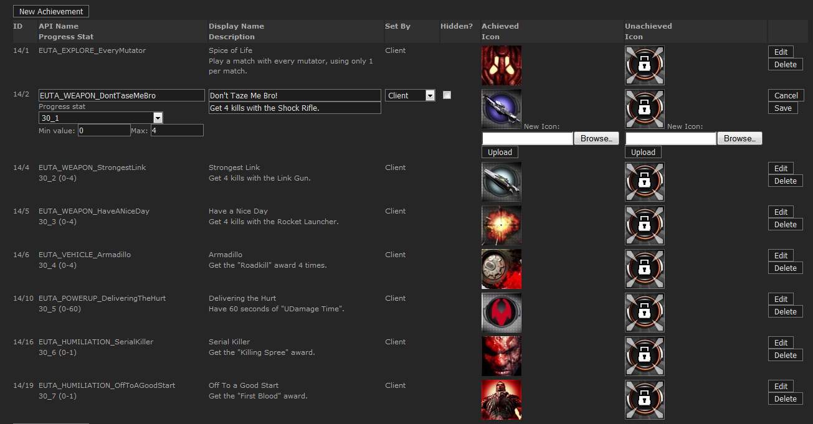

UDN
Search public documentation:
OnlineSubsystemSteamworks
日本語訳
中国翻译
한국어
Interested in the Unreal Engine?
Visit the Unreal Technology site.
Looking for jobs and company info?
Check out the Epic games site.
Questions about support via UDN?
Contact the UDN Staff
中国翻译
한국어
Interested in the Unreal Engine?
Visit the Unreal Technology site.
Looking for jobs and company info?
Check out the Epic games site.
Questions about support via UDN?
Contact the UDN Staff
UE3 Home > Networking & Replication > Online Subsystem Steamworks
Online Subsystem Steamworks
- Online Subsystem Steamworks
- Overview
- Integration status
- How to use and implement the Steam Integration in UnrealEngine3
- Stats
- Achievements
- Leaderboards
- Server advertisement/querying
- Steam Lobby
- Multiplayer Authentication
- Steam sockets
- Invites
- Automatically launching Steam
- Debugging
- Common problems
- Content Server
- Changelists
Overview
Please see the Online Subsystem Technical Guide for general and high-level information about the Online Subsystem. To implement features such as Achievements, Leaderboards, client/server stats and other Steamworks dependent features, your game needs to have a Steam appid, and you need access to the Steamworks partner website. Note: The OnlineSubsystemSteamworks integration is constantly being updated, and this page documents features which may depend on the latest engine build.
Integration status
OnlineSubsystemSteamworks is undergoing regular changes, and as of October 2012, this is the key list of functional features:
- Achievements
- Player stats
- Player leaderboards
- Server browser advertising
- Server browser querying
- Player invites
- Voice over IP
- Lobby management/advertising/querying
- Steam sockets (network connections through Steam, automatic NAT traversal)
- Multiplayer authentication
- Client authentication
- Server authentication
- Host servers without Steam client
- Server browser filtering is not yet optimized to utilize the server tag field, requiring server queries to perform filtering (may not happen for UE3)
- Server browser does not support NAT traversal; Steam lobbies must be used instead, if this is required
- Achievements/stats/leaderboards are setup through *Engine.ini; this is not secured against .ini modifications by players
- Net compatibility in UE3 is broken, if updating from an engine build earlier than December 2011 QA
- Implementations of OnlineSubsystemSteamworks previous to this, will require retesting and possibly some refactoring
- PS3/Mac support
How to use and implement the Steam Integration in UnrealEngine3
Using the Steam client
To get the initial game (after setting up the Content Server)
- Get the latest Steam SDK, and copy sdk/client/Steam.exe and sdk/client/Steam.cfg to a local folder
- Licensees can copy it from '//depot/UnrealEngine3/Development/External/Steamworks/sdk/client/...'
- UDK users can register and download from here https://partner.steamgames.com/home
- Make 'steam.cfg' writable and set the 'SdkContentServerAdrs' to the IP of where you are running your local content server
- Run 'Steam.exe'
- Right mouse click on your game (in our case 'Unreal Development Kit') on the 'My games' tab and install
- After installation is complete, right mouse click and 'Launch game'
To get an update (after setting up the Content Server)
- Updates are retrieved automatically as long as the Steam client is running
- Restart the Steam client if you do not wish to wait for the polling interval
Notes
- If you get an update, but the local content server has a fresh complete (non iterative) build, then the client will get confused. To fix this, delete all but 'Steam.exe' and 'Steam.cfg' in your local folder and start again.
- During initial development, this tends to happen a lot.
Using the Steam Content Tool
There are two methods, using the GUI and using Steam Script.Using the GUI to create an initial build with solution and project files
- Copy the build you wish to publish (e.g. 'C:\Builds\UnrealEngine3') locally
- Run the content tool (part of the Steam SDK) 'sdk/tools/ContentTool.exe'
- Click the 'New Solution' button
- Click 'Next'
- Solution Section: Type in the 'Solution Name' (UTGame) and the location to 'C:\SteamGame'
- Click 'Next'
- Application Section: Type in the 'Application Name' ('Unreal Development Kit' - this is what appears in the GUI), File Delivery is 'Loose Files' and 'Application ID' is 13260
- Click 'Next'
- Depot Section: Name is 'UTGame', Type is 'Content', 'Project Location' is 'C:\SteamGame', 'Depot Location' to 'C:\SteamGame\Depot', and 'Depot ID' to 13261
- Click 'Next'
- Click on the listbox entry to the right of
and type 'C:\Builds\UnrealEngine3' - Click 'Finish' (It will list files that it found to add to the project - click OK to synchronise the depot)
- Click on the 'Solution Properties' button near the top left of the GUI; it's just below the text of 'Solution Explorer'
- Expand out the tree views 'Launch Options -> Label = Default -> Command line = Unreal Development Kit'
- Right mouse click and change the command line to 'Binaries\Win32\UDKGame.exe'
- Close that window, save when prompted.
- Click the 'Build' toolbar button (this will take some time)
- 'C:\SteamGame\Depot' will now contain '13261_0.dat', '13261_0.blob' and 'UTGame.depot' (this is appid_version.dat and appid_version.blob)
- From the Publish menu, select 'Publish to Local Testing Server', this will copy '13261_0.dat', '13261_0.blob' and 'ContentDescriptionDB.xml' to the local server.
- Run the Content Server
Using Steam Script to create new versions
- Spawn a DOS box
- Run '//depot/UnrealEngine3/Development/External/Steamworks/sdk/tools/ContentTool.com' /verbose /console /filename '//depot/UnrealEngine3/UDKGame/Build/Steam/SteamMakeVersion.smd'
- Copy the new files from 'C:\SteamGame\Depot' to 'C:\Steam\DepotRoot'
- Copy 'C:\SteamGame\ContentDescriptionDB.xml' to 'C:\Steam\DepotRoot'
- Stop then start the content server so it detects the update.
Notes
- The update process is automated in the build system; check //depot/UnrealEngine3/Development/Builder/Scripts/Build/SteamVersion.build for details
- Be very careful when editing .sts and .spj files as seemingly innocuous changes can cause problems. Also, don't change the relative paths at all; this also causes problems.
Running the Steam Content Server
There are two methods to running the content server; from a command prompt or as a service.From a Command Prompt
- Spawn a DOS box
- Run '//depot/UnrealEngine3/Development/External/Steamworks/sdk/tools/contentserver/contentserver.exe' /verbose /DepotPath 'C:\SteamGame\LocalTestServer'
- Watch lots of debug spew fly by, but you should see mention of 13261_0 right at the end
- Steam clients can now connect and download this build
As a Service
- Move 'C:\SteamGame\LocalTestServer' to 'C:\Steam\DepotRoot' (unless you're using ContentServerCfg.txt to set the depot path for the service; see below)
- Spawn a DOS box
- Run '//depot/UnrealEngine3/Development/External/Steamworks/sdk/tools/contentserver/contentserver.exe' /install (this automatically starts the service)
- Steam clients can now connect and download this build
Notes
- The content server generally works very well and seamlessly handles a lot of the typical network nightmares.
- There are two notable exceptions:
- The content server does not detect new versions, to register a new version you need to restart the service.
- The depot location when running as a service cannot be set from the command line. When running as a service, it can only be set via a file named ContentServerCfg.txt located in the same directory as ContentServer.exe. Otherwise the default value of \Steam\DepotRoot is used (the path is relative to the root of the volume). The syntax of this file is similar to UE3 .ini files; so for example, to change the depot location from "\Steam\DepotRoot" to "\LocalContentServer", ContentServerCfg.txt would need to contain the following two lines:
[ClientContent] DepotRootPath = "\LocalContentServer"
Using Steam in Game
Simply having the Steam client running when launching the game will allow you to access all the Steam features. If the Steam client is not running, the networking layer will fall back internally to the common online subsystem (which basically has the functionality of OnlineSubsystemPC). The authentication system is quite simple; if you don't 'own' the game, you can't play on a server. Ask Valve for your own app id to test network connectivity with your games; the 'Unreal Development Kit' app id is owned by everyone.Stats
Backend setup
 To setup stats, you first need to define them on the Steamworks backend; this is accessed through the Game Admin panel on the Steamworks partner website. Stat entry API Name's must follow the format 'ViewId_ColumnId' (e.g. 2_0), where ViewId will be a unique number used to identify a particular stats table, and ColumnId is used to identify each entry in that stats table. 'Type' can be either INT/FLOAT (AVGRATE is untested/unsupported), and stats entries can be set either by the client or game server, but not both. Note: Player stats set by game servers, can only be set if the player has been successfully authenticated with the game server through Steam (this is usually the case, as clients are rejected at login if they fail auth).Gameplay integration
Stats data is managed using subclasses of the OnlineStatsRead and OnlineStatsWrite classes, which define the layout of the stats table, and are used as containers to read/write stats data.OnlineStatsRead/OnlineStatsWrite setup
To setup the stats table in your OnlineStatsRead subclass, you need to set its ViewId to match the ViewId of the backend stats table, and each stat entries ColumnId for that table, to the ColumnIds array. For the OnlineStatsWrite subclass, the stats table ViewId should be added to the ViewIds array, and the Properties array must have an element setup for each stat entries ColumnId, with Data matching the backends stat value type, e.g:
class YourOnlineStatsWrite extends OnlineStatsWrite
defaultproperties
{
Properties.Add((PropertyId=2,Data=(Type=SDT_Int32,Value1=0)))
}
Reading stats
To retrieve stats table values, setup a callback using AddReadOnlineStatsCompleteDelegate(), and call ReadOnlineStats(), passing in the UniqueIds of the players whose stats you want to read, and an instance of your OnlineStatsRead subclass. Once the callback returns, all of the players stats have been read into the OnlineStatsRead object, and you should call ClearReadOnlineStatsCompleteDelegate() to clear the callback. : Note: Not clearing these delegates may result in crashes when garbage collection attempts to remove the level from memory. You can read stats entries from the OnlineStatsRead object, using functions such as GetIntStatValueForPlayer(); see OnlineStatsRead.uc for more information. Note: As of Steamworks v1.12 (and earlier), when multiple UniqueId's are passed into ReadOnlineStats, it is slow to issue the callback, as it only retrieves stats for one UniqueId at a time; this is to temporarily workaround a crash in the Steamworks API (affects leaderboards especially).Writing stats
To write stats values for a player, create an instance of your OnlineStatsWrite subclass, and use functions such as SetIntStat() to set stat values (see OnlineStatsWrite.uc); then use WriteOnlineStats() to cache the stats data, and FlushOnlineStats() to commit it to the backend. If you want to receive a callback for when the commit is complete (or if it fails) use AddFlushOnlineStatsCompleteDelegate() and ClearFlushOnlineStatsCompleteDelegate() to set/clear the callback.Game server stats
Game server stats, which are player stats which can only be written by game servers, must be setup using the GameServerStatsMappings array in *Engine.ini; this maps OnlineStatsWrite ViewId's to game server stats. On the backend, the Set By field for the stat value must be set to GS for this to work.Debugging/Development
To reset stats, use the ResetStats() function.Achievements
Backend setup
 To setup achievements, you first need to enter them into the Steamworks backend; this is accessed through the Game Admin panel on the Steamworks partner website. At a minimum, achievements must have their icons set, and must be set by the client; they need to be given unique API names (preferable), or you can sequentially name them 'Achievement_#' where # is a number starting from 0. Note: With the 'Achievement_#' naming convention, there must not be a gap between achievement numbers, e.g. Achievement_1, Achievement_3, as Unreal stops loading achievements when it fails to find one.Achievement stats
It is best to also create stats entries for achievements, for tracking progress; these stats values will be updated through the Online Subsystem. Stats must be of type INT, and their API name must follow the 'ViewId_ColumnId' naming convention (see the Stats section above), where ColumnId will map directly to AchievementId (described in the Online Subsystem section below). You can link these stats entries to achievements, on the backend achievements page; set Min and Max to indicate the progress required for unlocking achievements. Note: See page attachments for images of the backend stats and achievements for the UDK.Online Subsystem setup
Achievements are linked to the Steam backend through the AchievementMappings array in OnlineSubsytemSteamworks.uc, which is configured through DefaultEngine.ini or DefaultEngineUDK.ini. Important: If you wish to increase the security of achievements, remove 'config' from AchievementMappings and specify the values in defaultproperties in OnlineSubsystemSteamworks.uc. You can also store achievement mappings as a static TArray in C++, for even greater security. If you decide not to set this array up, achievements will use the 'Achievements_#' naming convention. If you use AchievementMappings, you need to map a unique 'AchievementId' value (preferably sequential, starting from 0) to the backend achievement API Name, through 'AchievementName'; this must be done for every achievement. Note: 'AchievementId' corresponds to ColumnId if achievements are linked to stats.Gameplay integration
There are two ways of handling achievements, one is to handle them manually through Online Subsystem functions, and the other is to let them function automatically through achievement stats updates (recommended, see the 'Automatic Progress/Unlocks' and 'Tracking Progress' sections). Note: See UTAchievementsBase.uc, UTAchievements.uc and DefaultEngineUDK.ini to see example code for UDK implementation of achievements.Manual Progress/Unlocks
To unlock achievements, you can use the UnlockAchievement() function, 'AchievementId' maps to the achievement API name specified for that id in the AchievementMappings array. If AchievementMappings is not setup, then UnlockAchievement() assumes the API Name is: Achievement_# where # is replaced with AchievementId. To receive notification of successful/failed achievement unlocks, use AddUnlockAchievementCompleteDelegate to setup a notification callback before calling UnlockAchievement, and ClearUnlockAchievementCompleteDelegate to clear the callback. This should work for automatic achievement unlocks as well, but has not been tested. To display achievement progress, call DisplayAchievementProgress(). The AchievementId parameter follows the same rules as UnlockAchievement().Automatic Progress/Unlocks
If you want the Online Subsystem to automatically unlock achievements, or to automatically display achievement progress, you must have stats linked to achievements on the backend, and must setup the 'ViewId' and 'MaxProgress' values in AchievementMappings. In 'AchievementMappings', 'ViewId' should match the ViewId of achievement stats on the backend, 'MaxProgress' indicates when the achievement should unlock, 'ProgressCount' determines the amount of progress required before displaying a progress update, and 'bAutoUnlock' controls automatic unlocks.Tracking progress
If you have achievements linked to stats on the Steam backend, you can use the stats system to track achievement progress, and also to optionally unlock and display achievement progress automatically. See the Stats section above on how to setup and use the stats system; ColumnId should match AchievementId for achievement stats. If you have automatic achievement progress/unlocks enabled, these will be triggered by 'FlushOnlineStats', using the input achievement stats data.Debugging/Development
To reset achievements, use the ResetStats function, passing in True to reset achievements. However this will reset BOTH stats and achievements.Leaderboards
Backend setup
Leaderboards can be setup through the Game Admin panel on the Steamworks partner website, or can be setup using the CreateLeaderboard() function (this function should not be used in release code, only for development purposes). The specified leaderboard name, will be the human readable leaderboard name displayed on the Steam leaderboard page, and at the moment, that is hard coded by Valve and is not localized. Note: As of December 2011, leaderboards are no longer linked to stats on the backend, so the below sentence only applies to pre-December code. You must setup at least one stats entry (with a unique ViewId) for each leaderboard, with the API name following the ViewId_ColumnId naming convention. The stats entry for the leaderboard must be of type INT, and must be set by the client; other stats entries in the same table/view do not have to be INT.Online Subsystem setup
Leaderboards are linked to the backend by the LeaderboardNameMappings array. LeaderboardName identifies the leaderboard, and should match the human-readable leaderboard name on the backend; ViewId maps the leaderboard to a particular stats table. Important: If you wish to increase the security of leaderboards, remove 'config' from LeaderboardNameMappings and specify the values in defaultproperties in OnlineSubsystemSteamworks.uc.Gameplay integration
See the Stats section above on how to setup and use the stats system. Leaderboards are read and written using the stats system, and can only be written by the client. OnlineStatsRead and OnlineStatsWrite subclasses are setup as normal, except a column must be chosen to contain the leaderboard score. In the OnlineStatsWrite subclass, RatingId is used to identify the ColumnId used for the leaderboard score; the OnlineStatsRead subclass does not need to setup anything extra. Note: See GFxUILeaderboard.uc and ClientWriteLeaderboardStats() in UTPlayerController.uc to see example code for UDK implementation of leaderboards.Reading
To read leaderboard data, use ReadOnlineStatsByRank() and ReadOnlineStatsByRankAroundPlayer() instead of 'ReadOnlineStats()'; each players rank/name/UniqueId can be retrieved from the Rows array in the OnlineStatsRead object, and the leaderboard column contains the players score. Note: ReadOnlineStatsForFriends is only functional with leaderboards as of July 2012 QA (or changelist 1271496); this will not work with previous builds.Writing
To write leaderboard data, use WriteOnlineStats() and FlushOnlineStats() as you normally would, and it will update the leaderboard score based upon the chosen leaderboard column.Extra functionality
Leaderboard Information
To get extra information about a leaderboard (SortType, DisplayFormat and LeaderboardSize), you can access the LeaderboardList array, after performing a read/write on the leaderboard at least once. LeaderboardSize is updated every time the leaderboard is read from or written to.Forced updating
By default, when writing leaderboard scores, the best value is kept; if you try to set a score of 5 when the current leaderboard score is 10, it will fail. You can force it to update the leaderboard score, by setting 'UpdateType' to LUT_Force for the leaderboard in 'LeaderboardList'; if the leaderboard is not in 'LeaderboardList', it is safe to add an entry, specifying only 'LeaderboardName' and 'UpdateType'.Server advertisement/querying
When advertising servers, ensure that ServerName is set under [Engine.GameReplicationInfo] in *Game.ini, otherwise the code will fallback to a default server name.
Online advertising/querying
To advertise game servers on the Valve master server, you need to contact Valve so they can enable this for your games appid, and they will also provide you with a unique ProductName key for your game. Note: See the Debugging and Common problems sections for information on fixing issues with advertising/querying. Note: The playercount displayed on the server browser, is tied into the authentication code; the playercount is determined by the number of authenticated clients, so ensure bAuthenticateClients is true under [Engine.AccessControl] in *Game.ini.
ProductName
The ProductName value is used internally by Steam, to advertise game servers for your game, and for licensee's with source access it should be put in the STEAM_PRODUCT_NAME define in OnlineSubsystemSteamworks.h. For licensee's using the UDK only, who have a unique appid, ProductName should be put in DefaultEngineUDK.ini, under [OnlineSubsystemSteamworks.OnlineSubsystemSteamworks], like so:ProductName=unrealdk
GameDir
The other important value to setup for your game, is the GameDir value in *Engine.ini; this should be given a value unique to your game, and it is important, as it is the value used to filter your game on the Valve master server. If you do not specify a GameDir value unique to your game, server browser queries will go through all servers, from every game on the Valve master server.Advertising through UDK
UDK developers without a unique appid, can advertise their servers through the UDK itself; the only important thing to do here, is to setup a GameDir value unique to your project, so that servers from other UDK-only projects are not returned in server browser queries. Only non-commercial UDK developers should advertise through the UDK itself; commercial developers must contact Valve and get a unique appid and ProductName.LAN advertising/querying
Note: This documentation section applies to LAN queries for all Online Subsystems. To properly advertise and query LAN servers with the online subsystem, you must ensure that you set the LanGameUniqueId and LanPacketPlatformMask values under [IpDrv.OnlineGameInterfaceImpl] in *Engine.ini. These values are used to restrict the servers that show up in LAN query results, so that results for different UE3 games aren't shown (due to differing LanGameUniqueId values), and so that you can restrict PC servers from showing up on PS3 server browser queries (through LanPacketPlatformMask restrictions). For LanGameUniqueId, you should generate a random 32bit integer value and set that in the ini file. For LanPacketPlatformMask, you should set the mask value based upon the EPlatformType enum in UnFile.h (this can be specified using hexadecimal, e.g. 0x00000001); here is a table of values:
| Platform | Mask |
|---|---|
| Windows | 0x00000001 |
| Windows dedicated server | 0x00000002 |
| Xbox360 | 0x00000004 |
| PS3 | 0x00000008 |
| Linux | 0x00000010 |
| MacOSx | 0x00000020 |
Steam Lobby
The lobby system is disabled by default, enable it in OnlineSubsystemSteamworks\Globals.uci (requires UScript and C++ recompile to enable) see OnlineLobbyInterfaceSteamworks.uc\UOnlineLobbyInterfaceSteamworks.cpp for implementation details. When you modify globals.uci, open and save a .uc file as well, as there is a make commandlet bug which does not check .uci files to see if recompilation is needed. Note: The Steam lobby code is unsupported (hence why it is disabled by default), outside of fixing bugs or otherwise broken code. It is mostly just a wrapper around SteamAPI's isteammatchmaking.h lobby code, the majority of which has been implemented fully, but any additional features (introduced over time by the SteamAPI, or otherwise not currently implemented) will need to be added by licensees. Note: The lobby system is not a replacement for the server browser (albeit it is good to implement anyway, since it resolves browser-based NAT issues for hosts), as it functions very differently (no inbuilt ability to ping servers before join for instance) and the Steam Client must be open to use lobbies, which means dedicated servers can not use them.
Multiplayer Authentication
Steam supports multiplayer authentication, for verifying client and server SteamId's, verifying that a client owns the game, is not VAC banned, and is not already authenticated on another server. This is controlled through a generalized online subsystem interface, OnlineAuthInterface, with general authentication logic implemented in AccessControl (for controlling authentication and admission of clients to a server), and in LocalPlayer (for clientside handling of server authentication). This is exposed for configuration in *Game.ini, under [Engine.AccessControl] with the following configuration settings:
- bAuthenticateClients - Whether or not game servers should authenticate joining clients (clients are blocked from joining at PreLogin, until auth completes, or kicked if it fails)
- bAuthenticateServer - Whether or not clients should authenticate the game server (happens after client auth completes)
- bAuthenticateListenHost - Whether or not players hosting a listen server should be authenticated with their own server
- MaxAuthRetryCount - The maximum number of times to retry authentication for a player
- AuthRetryDelay - The delay between auth retry attempts
Authentication and Stats
For stats entries which are set to GS (i.e. GameServer) on the backend, where only game servers can write these stats for players, it is essential that the player is authenticated on the server, or else GS stats cannot be written for that player.Steam sockets
Steamworks provides a networking interface for automatically handling NAT traversal, which allows you to connect to servers based upon SteamId. This is implemented by OnlineSubsystemSteamworks, in the form of a custom net driver; to enable this, open DefaultEngine.ini, and under [Engine.Engine], change:
NetworkDevice=IpDrv.TcpNetDriver
NetworkDevice=OnlineSubsystemSteamworks.IpNetDriverSteamworks
Starting a server
When the Steam sockets net driver is set, servers must be started with ?steamsockets in the commandline, in order to enable Steam sockets. If that is not put in the commandline, regular IP connections are used. Every time a server is started with Steam sockets, it will generate a new SteamId, which is logged in the server logfile, and can be retrieved in UnrealScript through OnlineAuthInterface.GetServerUniqueId. This is the UID that must be used to connect to a server, however, any clients attempting to connect to the server by regular IP, will be automatically redirected to the servers SteamId address. When a server is started with Steam sockets, it will also advertise the servers SteamId in the server browser, with the key SteamServerId. To access this in UScript, an OnlineGameSettings subclass must be given a databinding variable with the same name; see UTGameSettingsCommon for an example. Note: To get the server SteamId through code, use GetServerUniqueId() in OnlineAuthInterfaceConnecting to a server
To connect to a server using Steam sockets, the client must specify the server SteamId in the connection URL; SteamId URL's are specified in the format Steam.#, where # is the SteamId, e.g. Steam.90083795756409860. For example, the console command to connect to a server would be: open steam.90083795756409860 Clients that attempt to connect to the servers regular IP, will be redirected by the server (if there are no NAT problems with regular IP's), to the servers SteamId address.Forcing Steam sockets
Note: This feature is currently not working correctly, requiring servers that are being joined to be queryable on the server browser. A pending changelist for October 2012 UDK adds the bSteamSocketsOnly configuration option under [OnlineSubsystemSteamworks.IpNetDriverSteamworks] in *Engine.ini, which (when enabled) forces servers to always use steam sockets (removing the need to specify ?steamsockets), and which forces clients using the online subsystems server browser, 'JoinOnlineGame' and invite functionality, to always connect to a servers steam sockets address (even if the server is not advertised as using steam sockets, and is not advertising a steam address, clients assume it does use steam sockets, and use the steam address given by the SteamAPI). This helps maximize support for NAT traversal, and if it is enabled then it should be enabled for your entire game (preferably hard-coded, instead of just using bSteamSocketsOnly); this particularly helps to ensure that invites, and other game server joins initiated externally by Steam, will always be successful (even without full port forwarding). Clients will still be able to use "open IP" to try and join servers (just like with ?steamsockets), but will be redirected by the server, to join the servers steam sockets address.Invites
The OnlineSubsystemSteamworks integration provides thorough support for executing invites sent within the Steam Client and sent ingame, as well as supporting 'join friend' features and other server joins triggered within the Steam Client UI, including those that startup the game (all generically labelled 'invites' for this section). All of these are handled through the online subsystems invite code, regardless of whether or not they were triggered by an invite. Note: Your game must support server browser advertising, and the server must be listed on the master server (even if not directly queryable, i.e. does not need ports forwarded), in order for invites to work properly. Note: There are pending changes for the October 2012 engine build, which significantly affect the functionality of invites; this sections documentation is based on that code.
Sending invites
There are two primary ways of sending invites, through the Steam UI (typically, on the friends list, right clicking a friend and inviting them) and through SendGameInviteToFriend in the online subsystem. SendGameInviteToFriend is the recommended way, as this is most compatible with steam sockets, but both work.Joining friends or servers
When you try to join a friend or server through the Steam UI (whether through friends list or Steam Community etc.), this is treated exactly like all other invites triggered through the Steam UI; there is no way to distinguish between actual invites, or server joins triggered locally in the Steam Client.Handling invites
When an invite is received by UE3, it automatically kicks off an internal server browser search to find the server the invite is for (this works so long as the server is listed on the master server, even if it is not directly queryable). Once this search returns, the result is passed through the OnGameInviteAccepted delegate in the online subsystem; when that is triggered, it's passed in a server search result containing information for the invite, and must call AcceptGameInvite in order to accept the invite. AcceptGameInvite will automatically call JoinOnlineGame, which will trigger the OnJoinOnlineGameComplete; at this point, you should then join the server, at the URL specified by the GetResolvedConnectString function (using that function to get the join URL is important, as it will automatically know whether to use a Steam sockets address, or a regular IP address). The base engine code in PlayerController.uc already handles all of this correctly, and can be used as a reference. Note: When Steam sockets are in use, the SteamServerId value will be set within the search results game settings; see the Steam sockets section for more info.Startup invites
Since invites and server joins can be triggered within the Steam Client, when the game is not open, Steam is able to startup the game automatically to handle these invites. Due to this, it's very important to hook OnGameInviteAccepted as soon as possible at startup (again, the base engine code in PlayerController.uc handles this correctly), so that the invite is not missed. To test this in dev builds that can't launch from Steam, you can specify on the commandline: -SteamConnectIP=127.0.0.1:7777 (you must specify the servers public IP, for this to work)Steam sockets
The invite code ties in closely with steam sockets, and because there are several different types of invites, not all of these invites fully support steam sockets and thus do not all fully support 100% NAT traversal (due to limitations with info provided by Steam). Invites triggered through the Steam UI do not typically have enough information to join by steam sockets, but will be able to get this information if there is a friend on the specified server; if there is not a friend on the server, these invites will try to join by IP instead. Invites triggered through SendGameInviteToFriend should always have enough information to connect to steam sockets serversForce Steam sockets
Note: This feature is currently not working correctly, requiring servers that are being joined to be queryable on the server browser. If bSteamSocketsOnly is set for a game (see the Steam sockets documentation section), then all invites are guaranteed to work with steam sockets, no matter what. If your game will significantly depend upon NAT-friendly invites, it's highly advised that bSteamSocketsOnly is used, as it makes this a lot easier for users, and greatly simplifies configurations that need to be supported.Automatically launching Steam
If you need to ensure that the Steam client is running when you launch your game, you can configure the game to detect when Steam isn't running, and to automatically launch the Steam client (closing the game in the process, which is then relaunched by Steam). To set this up, edit *Engine.ini, and under [OnlineSubsystemSteamworks.OnlineSubsystemSteamworks], set bRelaunchInSteam to true, and set RelaunchAppId to your games appid; you must then delete steam_appid.txt from the Win32/Win64 folders in Binaries. It is also very important that your game is installed within the Steam folder (typically Steam\SteamApps\common\YourGame\), otherwise this will not work. When you launch the game outside of Steam, the game will be closed and relaunched by Steam (automatically starting the Steam client if necessary). Note: The most common cause of problems here, is failing to delete steam_appid.txt, so double check that you have done that, if you have problems. Note: As of 16/7/12, there is a bug in steam_api64.dll which prevents relaunching from working in 64bit games; this requires a fix from Valve.
Debugging
When you encounter a problem with the Steam subsystem, the first thing to do is always remove Suppress=DevOnline in *Engine.ini, under [Core.System]. This will greatly increase the amount of log info output about the online subsystem (alternatively, type unsuppress devonline in the console). For problems which may be occuring within the Steamworks API itself, you should add -debug_steamapi to the games commandline, and this will output error information from the Steam SDK into the logfile. Adding -console to the Steam client commandline can also be helpful, as it adds a 'Console' tab to Steam, which provides some debug output.
Steam sockets
When debugging Steam sockets, in addition to the above, it also helps to unsuppress DevNet in Engine.ini in addition to DevOnline, and for when there are extremely hard to track down issues at the net-channel level, you can unsuppress DevNetTraffic and in UnBuild.h, force SUPPORT_SUPPRESSED_LOGGING to 1 (be warned that this will massively spam the logfile). Additionally, if you want to debug internal Steam problems with steam sockets, such as difficulty making a connection, receiving timeouts and such, you can add -lognetapi to the commandline for Steam.exe itself, and also to the game commandline (which is required in order for the host to log information), then you can see detailed debug information about active sockets, in Steam\logs\netapi_log.txt.Server browser
When debugging the server browser (usually when a server is not showing up), you should look for log entries which reference ServerListResponse and ServerRulesResponse. ServerListResponse results are queries with the Valve master server, which will always return results no matter what; ServerRulesResponse results are queries with individual servers, which may fail if there are NAT, port-forwarding or other networking issues. If you see your server IP listed in any ServerListResponse entries, the server is successfully listed on the Valve master server. However, if your server IP is listed in any query failure messages, there is a very high chance that it is a misconfiguration (on the server) of a router/firewall with regards to port forwarding, or generally some other networking issue unrelated to UE3; such a misconfiguration will prevent ServerRulesResponse queries from taking place. If you see your server IP listed in any (non-failure) ServerRulesResponse entries, it is likely not a networking issue, but an issue with data you are advertising, engine version mismatches, or some other problem originating within UE3 (which should have log output detailing the cause of the problem). ServerListResponse log entries to look out for:DevOnline: ServerListResponse: Got server details (index: x) ... DevOnline: Querying rules data for Internet server x.x.x.x:xxxx
DevOnline: ServerListResponse: Server 'x' failed to respond DevOnline: ServerListResponse: Server 'x' Address: x.x.x.x:xxxx
DevOnline: ServerRulesResponse: Retrieved server rule: x=y
DevOnline: This server is for a different engine version (x), rejecting.
DevOnline: ServerRulesResponse: Rules response failed for server; IP: x.x.x.x:xxxx, UID: x
Rare issues
Update: As of 21/9/12, this problem is also related to the Steam MasterServer2.vdf file containing bad data, which is not fixable by making Steam redownload itself (or any other steps below); instead, you must grab the MasterServer2.vdf from a working Steam install (if available). Valve are aware of this and due to fix it with a Steam Client update (so check for Steam Client betas also if you encounter this). Sometimes people encounter more rare issues with server advertising/querying that are more difficult to track down, which are either caused by unusual networking configuration problems, or by Steam itself internally. For these issues (which are hard to identify) it can help to run Wireshark on clients/servers, to try and watch the query packets coming and going (these can be difficult to spot, but if you filter out all traffic other than the Steam ports in Wireshark, you can spot them). If you don't see the query request packet reach the server (or if you don't see the response reach the client), then it is almost certainly a networking issue; very rarely though, you may see the packet reach the server/client, but it may get lost internally within Steam itself. When such issues are encountered, you will need to contact Valve to get assistance investigating the issue (it may be a bug Valve will need to fix); such issues are extremely rare though, and can often be worked around (clientside at least) by deleting Steam and letting it redownload itself.Common problems
Some problems that can be encountered with the Steam subsystem.
Stats not updating
Common causes of stats writing failuresGame server stats
If you are writing game server stats for a player, you must ensure the client is correctly authenticated on the server; by default, the engine blocks players from joining a server if they fail auth, as controlled in AccessControl.uc. GameServerStatsMappings (as described in the Stats section) must also be setup properly, in order for the game to recognize which stats should be written as game server stats. Also, you must ensure that the server has setup its online session properly, which can be determined by seeing if it is listed on the master server.Leaderboards breaking
The December 2011 Steam updates greatly modified the way leaderboards store data, breaking binary compatibility with the previous implementation of leaderboards.Server not showing on master server
Common causes of servers failing to show up on the server browser.ProductName and GameDir
As described in the Server advertisement/querying section above, you must set a valid ProductName and GameDir value for your game, to get servers to show up and be queryable on the master server.AppId
You must ensure you have a valid steam_appid.txt file in your Binaries/Win32 directory, which correctly lists your games AppId.Port forwarding and lack of NAT traversal
Steam does not support NAT traversal for the server browser, so if you host a server, you need to make sure ports are open for the game/query ports, and for Steam itself; some more info: https://support.steampowered.com/kb_article.php?ref=8571-GLVN-8711Dedicated server without Steam client
If you run a dedicated server without the Steam client running, you must ensure that the files steamclient.dll, tier0_.dll, vstdlib_s.dll and steam.dll are present in the Binaries\Win32 folder.Hosting and querying from the same IP
In the 'Internet' tab on the server browser, some bad router or firewall configurations can block you from querying locally hosted servers; this happens when trying to send a packet to your own external/public IP.Bad routers
Some licensees have encountered problems with routers that appear to be configured correctly, yet have a fault which prevents server advertising from working correctly. There is not a list of routers which are known to have issues at the moment, so it is recommended that (when all else fails and everything appears to be configured correctly) you search for known problems with your particular router. The information on using Wireshark to debug, in the Rare issues part of the 'Debugging' section, can help narrow down whether or not your router is the issue (this debugging process is messy/complicated though).Steam Client issues
Issues with the Steam Client may cause any range of problems, including with the server browser; here is an article which provides some information on this:Programs Which May interfere with Steam There have also been reported problems with the MasterServer2.vdf files with Steam itself (particularly with the server browser), which might have a resolution here for some people:
https://support.steampowered.com/kb_article.php?ref=1452-HCVB-6984&l=english Another method of trying to track down Steam issues is to backup and then delete ClientRegistry.blob, and then relaunch Steam and see if the issue is resolved; if not, you can backup the Steam folder, and then delete all of its contents except for Steam.exe, and then let Steam.exe redownload all necessary files again to see if that resolves the issue. Some Steam Client issues are particularly difficult to track down however, so if none of the information in the 'Common Issues' or 'Debugging' section here helps, it is recommended to contact Valve.
Content Server
See the Steam page for steps on publishing/deploying your game and content
Changelists
Some major OnlineSubsystemSteamworks changes are listed here.
December 12th 2011
Changelist number: 1101160 Changelist:OnlineSubsystemSteamworks: ------------------------- - Leaderboards now store stats data within the leaderboard, instead of in the backend stats system - Game server stats ViewId's must now be explicitly specified in *Engine.ini through 'GameServerStatsMappings' under [OnlineSubsystemSteamworks.OnlineSubsystemSteamworks] - Since game server stats are determined based upon ViewId, client and game server stats should be read/written separately - Fixed a leaderboard error log throwing false positives - Added some stats debug logging - Improved existing stats debug logging - Fixed an issue where the Steam game server would initialize, despite '-nosteam' in commandline, or bEnableSteam=false - Removed 'bIncrementStatValues' from OnlineSubsystemSteamworks - Fixed a crash with game server stats, when the server is run without Steam running - Fixed an issue with authentication timers, when the game is paused - Fixed an issue with mismatched native class sizes for OnlineAuthInterfaceImpl, due to duplicate delegates - Fixed an issue where the code skipped ending of some auth sessions - ReadOnlineStats can now be used to read leaderboard entries for lists of players (as determined by ViewId and LeaderboardNameMappings)
December 8th 2011
Changelist number: 1097618 Build notes:Things to note about recent UE3 Steam changes: --------------------------------------------- - Net compatability is broken completely, through many additions/modications of the base UE3 netcode - Net-channel handshake code has been added to the base netcode - Steam authentication has been completely recoded - The login process has partially changed - Many base net control-channel messages have changed (and nearly all renumbered) - OnlineSubsystemSteamworks has changed substantially, modifying functionality of achievements/stats/leaderboard and authentication (among many other things) - Any pre-existing use of OnlineSubsystemSteamworks code will require retesting and possibly some refactoring - For more info, see: https://udn.epicgames.com/Three/OnlineSubsystemSteamworks - A generalized multiplayer authentication system has been implemented (currently only implemented by OnlineSubsystemSteamworks), which affects the AccessControl, GameInfo and LocalPlayer classes - Achievements, stats and leaderboards in OnlineSubsystemSteamworks are configured through *Engine.ini (primarily so UDK developers have easy access to changing settings); these lists are not secured against .ini modifications by players, so developers want better security, they should hard-code these lists in C++ (preferable) or UScript - The server browser does not support NAT traversal; if you wish to have NAT traversal for server browser/advertising, you must implement it through Steam lobbies in OnlineLobbyInterface - Server browser querying, with lots of servers, is currently very slow as the client must query all individual servers; the code is not yet optimized to use the 'server tags', which would reduce the need for individual queries - PS3/Mac support is not yet implemented Outline of UE3 Steam features/changes: ------------------------------------- - Support for stats/leaderboards/achievements has been expanded - Setup of achievements has been modified to make it easier to setup with Steam backend - Game server stats are now supported and fully functional - Leaderboard support has been integrated - Server browser advertising/querying has been fixed/improved - Voice over IP has been fixed - Basic support for Steam lobbies has been added, through OnlineLobbyInterface - Game connection NAT traversal has been added, through Steam sockets (i.e. Steam peer to peer networking) - NOTE: This is only for game connections; server advertising/querying with the server browser is not NAT-friendly - Multiplayer authentication has been fixed and expanded - Game servers can now be run without Steam running at the same time - Many other bugfixes and tweaksChangelist:
Steam sockets:
-------------
- Added SteamId based networking, for connecting to servers by SteamId instead of IP; automatically handles NAT traversal
- To enable Steam sockets, edit *Engine.ini, and under [Engine.Engine], set: NetworkDevice=OnlineSubsystemSteamworks.IpNetDriverSteamworks
- To connect to a server using steam sockets, use "open Steam.#", where # is the server SteamId
- To use steam sockets on a server, start the server with "?steamsockets" in the URL
- Servers using steam sockets will automatically redirect IP connections to Steam socket connections
- NOTE: To get the server SteamId through code, use 'GetServerUniqueId' in OnlineAuthInterface
Steam master server and server browser support:
----------------------------------------------
- UDK developers can now advertise their games servers on the Valve master server, and display the servers in the UDK server browser
- Non-commercial UDK devs can advertise their servers straight through the UDK, with no restrictions
- If devs want their mod to show up independantly of the UDK, change GameDir in DefaultEngineUDK.ini, to a unique value identifying the mod
- Commercial UDK devs MUST contact Valve, and get a unique appid/product-name, in order to advertise/list servers (don't use the UDK product name)
- ProductName can be set in DefaultEngineUDK.ini (non-commercial) and in OnlineSubsystemSteamworks.h (commercial)
Auth interface:
--------------
- Added new online subsystem interface, OnlineAuthInterface, for handling multiplayer authentication
- Completely rewrote auth system for OnlineSubsystemSteamworks, moving all internal engine code to OnlineAuthInterfaceSteamworks
- Implemented base multiplayer authentication logic in AccessControl (for serverside code) and LocalPlayer (for clientside code)
- Multiplayer authentication can be enabled/disabled under [Engine.AccessControl] in *Game.ini, with the following options:
- bAuthenticateClients: Authentication of clients when connecting to server
- bAuthenticateServer: Authentication of server with clients
- MaxAuthRetryCount: Maximum number of times authentication can be retried
- AuthRetryDelay: Delay between authentication retries
Steam lobby system:
------------------
- Implemented the Steamworks lobby system for licensees; see OnlineLobbyInterfaceSteamworks.uc\UOnlineLobbyInterfaceSteamworks.cpp
- The lobby system is disabled by default, enable it in OnlineSubsystemSteamworks\Globals.uci (requires UScript and C++ recompile to enable)
- At the moment, this is a Steamworks-specific interface, not a generalized interface compatible with other online subsystems;
as a result, it's subject to considerable change and binary compatability breakage, since it may need to be generalized in the future
OnlineSubsystemSteamworks:
-------------------------
- Added code for managing a games unique Steam product name when advertising/querying servers (required for interacting with Valve master server)
- Fixed code to correctly filter by unique 'GameDir' value, when querying servers (stops browser trying to list 20,000+ servers from other games)
- Added clientside filters for game server queries; necessary, as Steamworks supports very limited, hard-coded master-server filters
- Added 'bFilterEngineBuild' config value to DefaultEngine.ini/DefaultEngineUDK.ini, for filtering out servers with a mismatched build number
- Added 'All Gametypes' filter to server browser, to list servers from every gametype
- Added 'Unlisted Gametypes' filter to server browser; lists servers not running stock UDK gametypes (see GFxUDKFrontEnd_JoinGame::OnGameTypeChanged)
- Fixed issues with browser filter menu
- Added config FilterKeyToSteamKeyMap array to OnlineGameInterfaceSteamworks, to map OnlineGameSearch filters, to hard-coded master-server filters
- When a player is connecting, kick any other players with a matching IP and SteamId (fixes a rare auth issue preventing players from joining)
- Fixed an issue where the Steam Community profile page would show the IP used to connect to a server (e.g. 127.0.0.1), instead of the external IP
- Fixed issue with servers sending up to date query data, but not updating with the master server
- Fixed up some issues querying LAN servers
- Added code for cleaning up online game sessions, when exiting the game (fixes servers lingering on master server after shutdown)
- Fixed an issue with server browser string filters
- Added the functions 'UniqueNetIdToInt64'/'Int64ToUniqueNetId', for converting UID's to/from Int64 strings;
for use with Steam sockets, specifically the 'open Steam.#' command
- Fixed an issue where Steam sockets would be created for non-steam URL's
- Fixed an issue with Steam sockets, where if you tried to connect to a server with the same UID, it would trigger an endless send/receive loop
- Fixed an issue where Steam sockets would not close correctly
- Removed some redundant Steam sockets code, and fixed an issue with lingering sockets
- Integrated VOIP crash fix from Dayle @ Tripwire
- Migrated to Steamworks SDK v1.15
- Added 'GetCommandlineJoinURL', for retrieving the server URL/UID when the game is launched by a 'join friend' request
- Added 'GetFriendJoinURL', for retrieving the URL/UID of a friends current game
- Implemented the 'SendGameInviteToFriend' and 'SendGameInviteToFriends' functions (sends invite directly, instead of through Steam UI)
- Fixed being unable to read client game server stats
- Multiple significant (and unlisted) wide-ranging changes/bugfixes for Steam sockets
- Fixed a rare listen server crash
- Servers using Steam sockets now advertise the join UID; to access in a GameSettings subclass, add a databinding string property 'SteamServerId'
- Added code to disable relay servers with P2P networking (latency too high)
- Some Steamworks callbacks are now polled within OnlineSubsystemSteamworks (instead of within Steam SDK), fixing a number of SDK crashes
- Added 'ShowProfileUI' function, for opening up a players Steam Community page, with an optional sub-url for leaderboards/stats etc.
- Adjusted OnlineSubsystemSteamworks, so it can host Steam game servers without Steam running (NOTE: Does not work with 64bit binaries)
- Added 'bRelaunchInSteam' setting in *Engine.ini; if true, and the game is launched outside of Steam, the game exits and is launched in Steam
- NOTE: There must not be any steam_appid.txt in the Binaries folder, in order for this to work;
the 'RelaunchAppId' setting should be set to the games appid in *Engine.ini
- NOTE: The game must be installed correctly within the Steam folder for this to work (will not work from any other location)
Server Browser:
--------------
- Stock UDK gametypes now filter by gameclass as well as gametype integer (stops mod gametypes showing under Deathmatch etc.)
- Fixed browser using wrong filter settings, if you change the gametype selection too fast
Networking:
----------
- Added a basic handshake to the control channel code, and blocked control channel commands until the handshake completes
- Added a script hook for the disconnect command, 'NotifyDisconnect' in PlayerController, for cleaning up online game sessions
- Added some missing control channel implementation macros
- Modified control channel macros, to throw linker warnings upon missing implementation macros
- Added per-connection session UID's, which are sent with every packet (only with Steam sockets); necessary to stop connectionless Steam sockets
from colliding data between different game sessions
- NOTE: Also blocks most packet spoofing
Integrated OnlineSubsystemSteamworks changes from Ryan Gordon:
-------------------------------------------------------------
- Steamworks: Handle AvatarImageLoaded_t callback, so we can process avatar downloads faster in some cases.
- Steamworks: Allow access to small, medium, or large avatars.
- Steamworks: Expose player's Clan information to script (Steamworks-specific functionality).
- Steamworks: Don't use P2P sockets by default. Some licensees will want these enabled, but not all.
- Steamworks: Move to new Steamworks SDK's Auth APIs. (NOTE: Disabled, as needs more implementation)
- Steamworks: Added some basic, generic uscript-callable interfaces to Steam Cloud.
These would need to be more formal to be part of the higher-level OnlineSubsystem interface, since they aren't async, etc.
Still, licensees that are exclusively targeting Steam might find them useful.
- Steamworks: Allow use of SDK's P2P sockets instead of raw WinSock for game data.
This allows for NAT traversal; with this enabled, a client and server behind separate, restrictive NATs should be able to talk;
Steam bounces data off a public relay server, if necessary.
- Steamworks: Update SDK library in Binaries/Win32
- Steamworks: server-side stats are always available now, remove the preprocessor checks
(this was blocked out because older Steamworks SDK didn't support it).
- Steamworks: Implemented UOnlineSubsystemSteamworks::GetNATType().
- Steamworks: Actually enable Win64 support.
- Steamworks: add win64 support to the build scripts.
- Steamworks: normalize line endings in SDK headers, to make Visual Studio happy.
- Steamworks: remove conditional for older SDK release.
OnlineSubsystemSteamworks VOIP fixes:
------------------------------------
- Fixed an issue where VOIP decompression resulted in garbled data
- Added more checks against crashing due to VOIP AudioComponents pending GC
- Added a counter to delay VOIP sound node removal; reduces VOIP skipping
- Fixed an issue with XAudio2 inserting silence into the middle of procedural (VOIP) streams
- Tweaked VOIP buffering to smooth playback
- Fixed issue where the last half second of VOIP data would be cut off on releasing the transmit button
- Fixed bug where VOIP reads would not stop ticking, if Steam had compressed voice data available, but no raw data available (and vice versa)
- Worked around a Steam bug, where starting a new VOIP session before the old one finished, puts Steam in a 'recording' state, but returning no data
- Added additional fixes for VOIP crashes, caused by invalid AudioComponent references
- Fixed an issue where AudioComponents would not receive calls to OnAudioFinished upon level change
- Fixed VOIP recording breaking, due to Steam bug
- Added config value 'VOIPVolumeMultiplier' under [OnlineSubsystemSteamworks.OnlineSubsystemSteamworks], for tweaking base VOIP playback volume
- Boosted Steamworks VOIP volume
- Fixed an issue where VOIP playback would skip over silence
- Fixed multiple issues with VOIP playback timing
- Fixed rare VOIP playback crash on seamless travel
- Fixed another rare VOIP crash during travel
XAudio2:
-------
- Fixed issues with some audio finish notifications
- Adjusted max volume clamping (necessary for Steam VOIP)
AccessControl:
-------------
- Fixed game/admin password checks being case-insensitive
January 10th 2012
Changelist number: 1124321 Build notes:Script compiler changes required for Steam: --------------- - Fixed an issue with delegates in interfaces, where delegate properties were still being created for the delegates - Added a compiler error, when trying to call delegates through interface references; this is not supported, and could trigger crashes
January 18th 2012
Changelist number: 1132393 Build notes:OnlineSubsystemSteamworks: ------------------------- - Cleaned up and refactored significant portions of the new auth system - Adjusted default VOIP volume to a better level - Fixed an issue with the IP-to-SteamId redirect code, where if multiple players connected too early, not all of them would be redirected